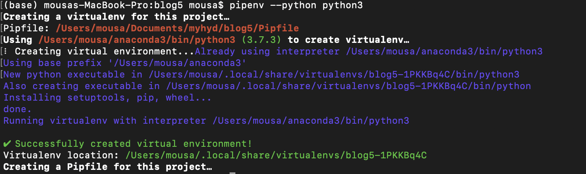
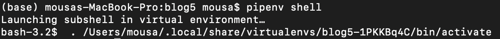
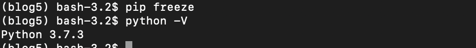
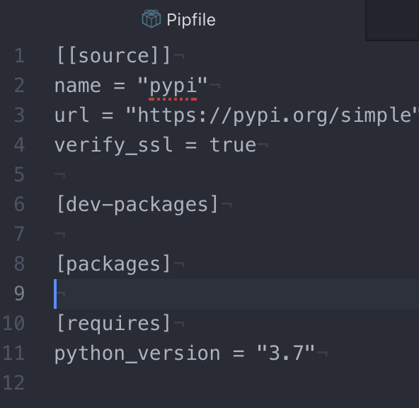
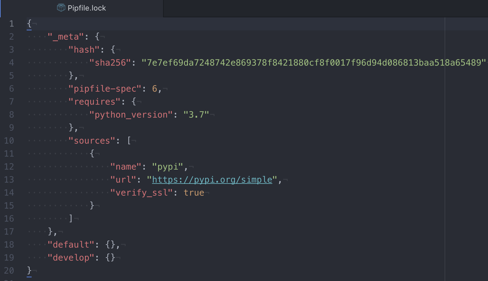
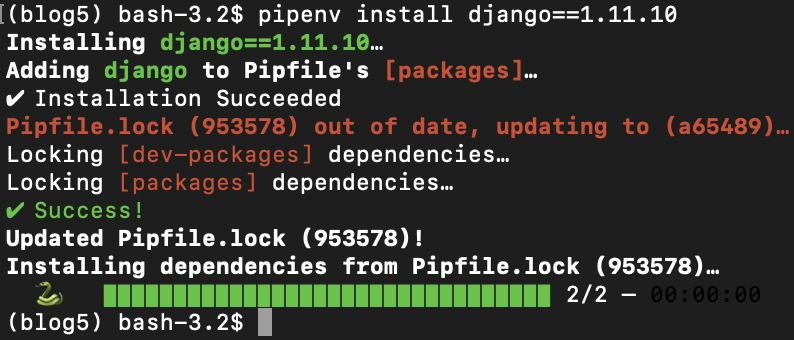
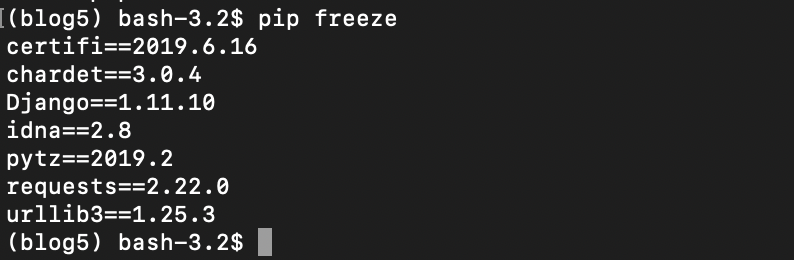
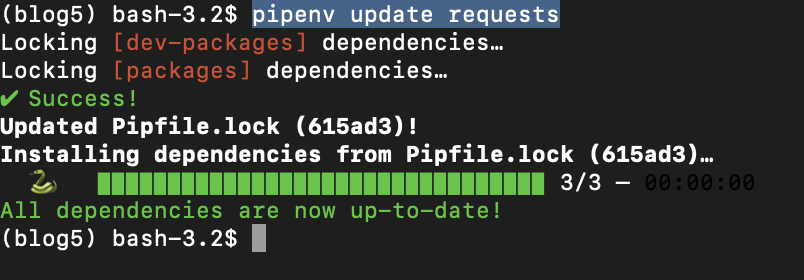
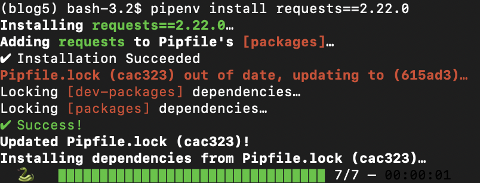

<!DOCTYPE html>
<html lang="en">
<head>
 <title>pipenv</title>
 <!-- Latest compiled and minified CSS -->
 <link rel="stylesheet" href="https://stackpath.bootstrapcdn.com/bootstrap/3.4.1/css/bootstrap.min.css" integrity="sha384-HSMxcRTRxnN+Bdg0JdbxYKrThecOKuH5zCYotlSAcp1+c8xmyTe9GYg1l9a69psu" crossorigin="anonymous">
 <div class="container">
  <h1><a href="https://mousam96.github.io/blog">blog</a></h1>
 </div>
</head>
<body>
 <div class="container">
<div class="row">
 <div class="col-md-8">
  <h3>pipenv</h3>
  <label>2019-07-01</label>
  <p>pipenv automatically creates and manages virtual environments for your projects as you go. use python versions as required, which is life changing.</p>
<p>On MacOS, installation is as easy as:</p>
<div class="highlight"><pre><span></span><span class="err">!</span><span class="n">pip</span> <span class="n">install</span> <span class="n">pipenv</span>
</pre></div>


<div class="highlight"><pre><span></span>Collecting pipenv
[?25l  Downloading https://files.pythonhosted.org/packages/13/b4/3ffa55f77161cff9a5220f162670f7c5eb00df52e00939e203f601b0f579/pipenv-2018.11.26-py3-none-any.whl (5.2MB)
    100% |████████████████████████████████| 5.2MB 5.9MB/s eta 0:00:01
[?25hRequirement already satisfied: certifi in /Users/mousa/anaconda3/lib/python3.7/site-packages (from pipenv) (2019.3.9)
Collecting virtualenv (from pipenv)
[?25l  Downloading https://files.pythonhosted.org/packages/db/9e/df208b2baad146fe3fbe750eacadd6e49bcf2f2c3c1117b7192a7b28aec4/virtualenv-16.7.2-py2.py3-none-any.whl (3.3MB)
    100% |████████████████████████████████| 3.3MB 7.8MB/s eta 0:00:01
[?25hRequirement already satisfied: setuptools&gt;=36.2.1 in /Users/mousa/anaconda3/lib/python3.7/site-packages (from pipenv) (41.0.1)
Collecting virtualenv-clone&gt;=0.2.5 (from pipenv)
  Downloading https://files.pythonhosted.org/packages/ba/f8/50c2b7dbc99e05fce5e5b9d9a31f37c988c99acd4e8dedd720b7b8d4011d/virtualenv_clone-0.5.3-py2.py3-none-any.whl
Requirement already satisfied: pip&gt;=9.0.1 in /Users/mousa/anaconda3/lib/python3.7/site-packages (from pipenv) (19.0.3)
Installing collected packages: virtualenv, virtualenv-clone, pipenv
Successfully installed pipenv-2018.11.26 virtualenv-16.7.2 virtualenv-clone-0.5.3
</pre></div>


<p>you can create your virtual environment using pipenv by typing in the terminal:</p>
<p>pipenv --python python3</p>
<p></p>
<p>To Activate the environment :</p>
<p>pipenv shell</p>
<p></p>
<p>you can see where the Environment is saved /Users/mousa/.local/share/virtualenvs/blog5-1PKKBq4C</p>
<p>To check our installed backpages  </p>
<p>pip freeze</p>
<p></p>
<p>as you can see we did not install any backpages yet but we can check our python version.</p>
<p>python -V</p>
<p>while activating your environment there is new file created (Pipfile)</p>
<p></p>
<p>[[source]]: where you are downloading your packages from</p>
<p>[packages] :package requirements for running the application and its versions</p>
<p>(which packages you will use when running the application).</p>
<p>[dev-packages]: package requirements for developing the application and its versions</p>
<p>(which packaes you will use when developing the application)</p>
<p>[requires]: required Python version</p>
<p>To install th Pipfile:</p>
<p>pipenv install</p>
<p></p>
<p>new file created (Pipfile.lock)</p>
<p>The Pipfile.lock is intended to specify, based on the packages present in Pipfile, which specific version of those should be used, avoiding the risks of automatically upgrading packages that depend upon each other and breaking your project dependency tree.</p>
<p>You can lock your currently installed packages using</p>
<p>Install Packages</p>
<p>pipenv install django==1.11.10</p>
<p></p>
<p>you can see change in the Pipfile</p>
<p>[packages]</p>
<p>django = "==1.11.10"</p>
<p>you can install without a specific version which mean the latest one</p>
<p>pipenv install requests</p>
<p>So after adding some Packages you can check them:</p>
<p></p>
<p>you can update the Packages:</p>
<p></p>
<p>pipenv update requests</p>
<p>you can install the version you want Manually:</p>
<p></p>
<p>pipenv install requests==2.22.0</p>
<h1>IT's SIMPLY Virtual Environments Manager for Python</h1>
 </div>
</body>
</html>